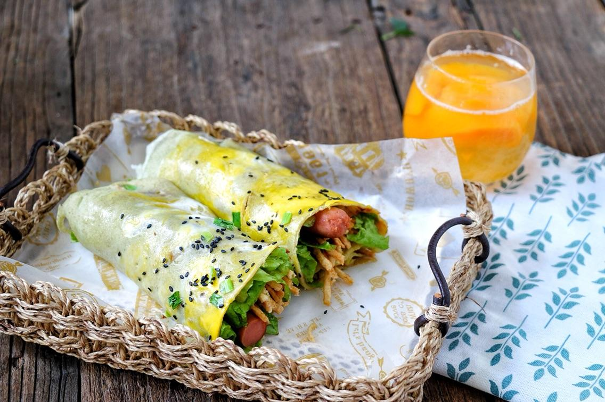
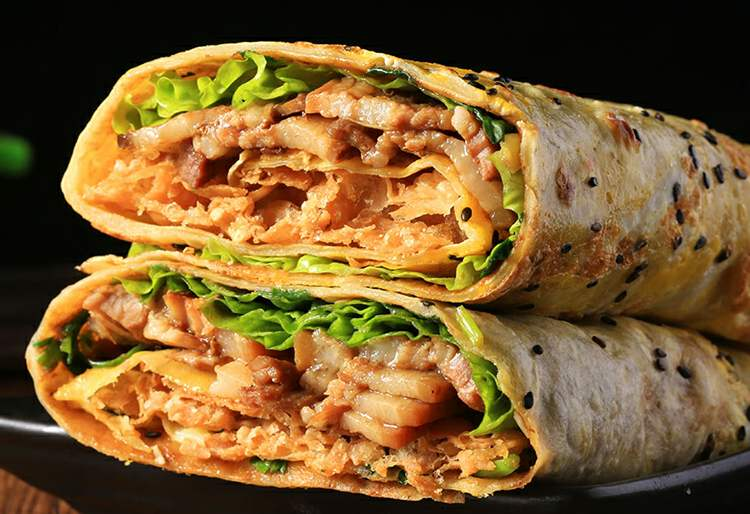
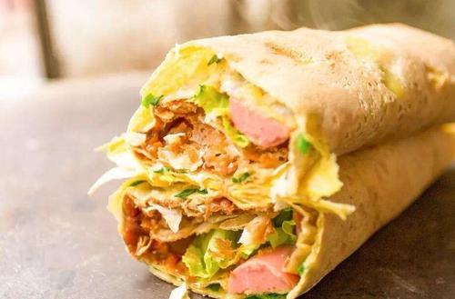
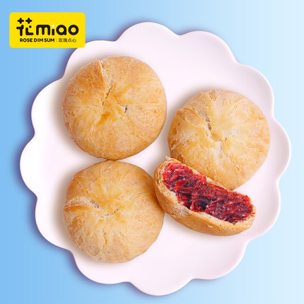
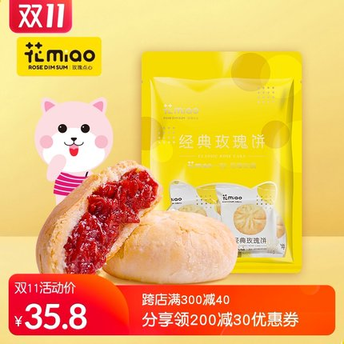
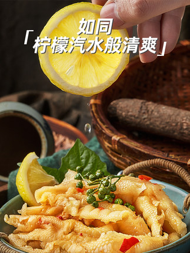
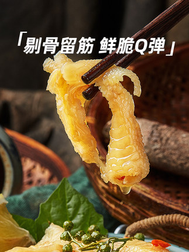
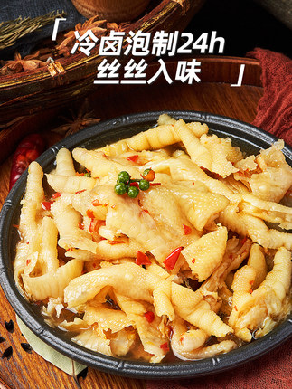

基本信息
| 姓名 |
学号 |
性别 |
班级 |
| 秦湘楠 |
201916180308 |
女 |
通信1903班 |
| 李鑫月 |
201916180309 |
男 |
通信1903班 |
| 李俊凯 |
201916180310 |
男 |
通信1903班 |
自我介绍：
美食，顾名思义就是美味的食物，贵的有山珍海味，便宜的有街边小吃。其实美食是不分贵贱的，只要是自己喜欢的，都可以称之为美食。 下面我来介绍一下我们家乡的美食
第一个：煎饼果子
煎饼果子是天津市的著名小吃。天津人把其作为早点，由绿豆面制作的薄饼，鸡蛋，还有馃子(油条)或者薄脆的“馃篦儿”组成，配以面酱，葱末，香菜，辣椒酱(可选)作为佐料。
煎饼果子



如果你到天津玩，你可以不吃狗不理包子但你一定要尝尝本地的煎饼果子，一口下去都是满足！
第二个：happymiss花满楼玫瑰鲜花饼
花喵miao云南玫瑰鲜花饼特色特产舌尖上的中国美食
happymiss花满楼玫瑰鲜花饼


这是昆明的小伙伴儿强烈推荐的，说这个牌子在当地超火，完胜各大品牌知名鲜花饼，如果有兴趣，要去云南去吃啊!
第三个：灌灌捞家的无骨柠檬鸡爪
罐罐捞柠檬鸡爪



这款鸡爪简直是开胃神器，根本停不下来！酸酸辣辣，味道超级好，就像冰柠檬一样清爽，凤爪保留了脆骨和筋，富含胶原蛋白，吃起来相当过瘾。
凤爪的个头挺大的，肉质厚，一盒足足有八两呢，一口一个超满足!